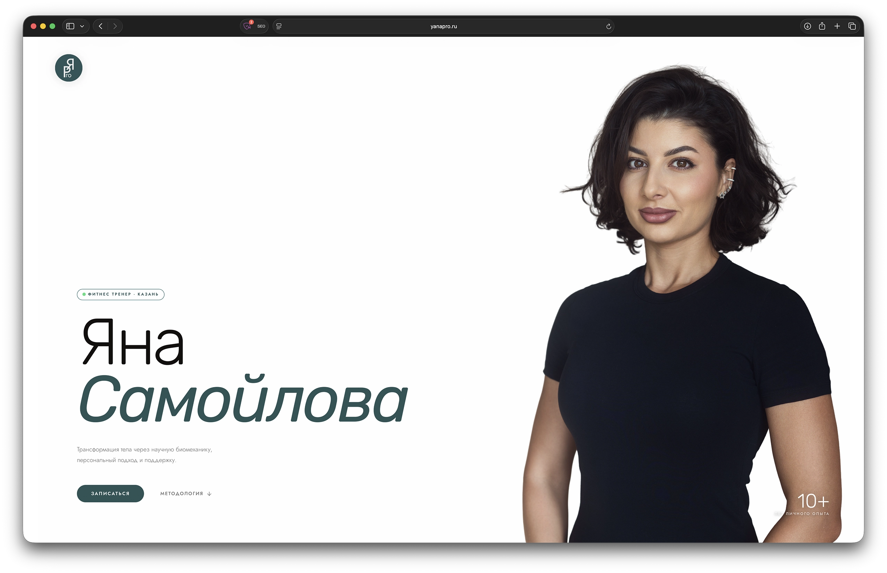

Кейс · фитнес · личный бренд
Тренер,
а не бутафория.
Яна — персональный фитнес-тренер в клубе DDX UNO в Казани. Мы сделали ей лендинг — и это первый тренер DDX со своей собственной страницей. Цель проста: клиент, который ищет тренера, должен сразу увидеть, что перед ним настоящий профессионал, а не аккаунт-однодневка.
- Клиент
- Яна Самойлова, DDX UNO
- Профиль
- Персональный тренер, Казань
- Формат
- Лендинг · под ключ
- Срок
- Около недели

Зачем тренеру свой лендинг
Персонального тренера выбирают в первую очередь глазами — и это честно. Мы встречаемся визуально: клиент листает список тренеров, цепляется за того, кто вызывает доверие, и только потом читает регалии.
Свой сайт здесь — второй по важности аргумент. Соцсети есть у всех, но часть клиентов ищет тренера через Яндекс и Google — это единая база, где можно спокойно рассмотреть человека. Наличие собственного лендинга сразу добавляет веса: видно, что тренер вложился в себя всерьёз, и есть где взять все контакты.
Яна стала первым тренером DDX UNO со своей отдельной страницей — в клубе таких раньше не было.
Премиальность в деталях
Лендинг собран в фирменных оттенках — бежевый и тёмно-зелёный. Чтобы страница ощущалась дорого, а не как типовая визитка, я добавил анимационные вставки под фитнес-тематику: кольца активности и пульсометр. Мелочь, но именно такие детали отличают премиальный лендинг от шаблонного.
- Фирменная гамма: бежевый и тёмно-зелёный
- Анимации колец активности и пульсометра для премиального ощущения
- Блок отзывов
- Все контакты для связи в одном месте
- Логотип разработан с нуля — своего у Яны не было
- SEO под запросы поиска персонального тренера
Фотосъёмка, которая работает дважды
Фотографии — половина успеха для сайта тренера. Поэтому съёмку мы провели профессионально, специально под проект, и всю обработку я сделал сам.
Дальше — приятный бонус: тот же кадр Яна разместила и в списке тренеров на официальном сайте DDX. Одна съёмка отработала в двух местах сразу — на личном лендинге и в клубной базе, и там, и там Яна выглядит на уровень выше соседних карточек.
Запись по слотам
Чтобы лендинг не просто показывал Яну, а приводил клиентов, мы добавили форму-календарь: заявка на пробную тренировку уходит в Telegram-бот, чтобы Яна ничего не пропустила.
Сейчас мы развиваем это в полноценную систему записи. В работе — админка в виде PWA-приложения на телефоне Яны: она открывает конкретные слоты (дни и часы, когда ей удобно), а форма на сайте показывает клиенту свободное время в реальном времени — записаться можно только на реально доступный слот.
Заявки дублируются в Telegram с push — чтобы видеть их и в админке, и в боте и точно не потерять клиента. Часть уже работает, полную версию готовим сейчас.
Журнал тренера — приложение на iPhone
Сайт приводит клиентов, а дальше начинается работа в зале. Раньше Яна держала всё в голове, заметках и календаре: кто с каким весом приседал, сколько занятий осталось в абонементе, кто придёт в пятницу. Поэтому я сделал ей личное PWA-приложение: оно ставится на iPhone с сайта, как обычное, без App Store.
- Сводка дня на главном экране: сколько тренировок сегодня, кто следующий и через сколько, кнопка «Начать»
- Карточки клиентов с фото, целью, весом тела и заметками
- Журнал тренировок: подходы «кг × повторы» с подсказкой прошлого раза, кнопки ±2,5 кг и повтор прошлой тренировки в одно касание
- Прогресс «было → стало» с графиком по каждому упражнению и отметкой «Рекорд»
- Абонементы на 5 и 10 занятий со сроком действия: остаток считается сам, поздняя отмена списывает занятие
- Расписание с повторами по неделям, счётчиком на вкладке и предупреждением, если абонемента не хватит
- Push-уведомления: утренняя сводка на день и напоминание перед тренировкой
- Удаление с кнопкой «Отменить», работа без интернета и еженедельный бэкап на Google Диск
- Раздел «Заявки» прямо в приложении: записи с формы на сайте, подтверждение, добавление в календарь iPhone и кнопки связи — звонок, WhatsApp, iMessage или Telegram, в зависимости от того, какой контакт оставил клиент
- График свободных часов для формы на сайте: Яна включает дни и отмечает время, всё сохраняется само, без кнопки «Сохранить»
Интерфейс сделан по канонам iOS: плавающее меню-«пилюля», которое прячется при прокрутке, окна снизу со смахиванием, крупные кнопки под большой палец и тёмная тема вслед за системой. Перед запуском я провёл полный аудит: проверил безопасность данных, расчёты абонементов и расписания.


Что получилось
У Яны есть то, чего нет у других тренеров клуба: собственный лендинг под ключ — с фирменным стилем, профессиональным фото, логотипом и записью на пробную тренировку. А в телефоне — собственный журнал тренера с клиентами, абонементами, расписанием и напоминаниями. И визуально, и по «профитам» она теперь выигрывает у соседних карточек в списке тренеров.

Следующий проект — ваш
Нужен сайт под задачу?
Расскажите об идее — обсудим структуру, формат и сроки за пару сообщений.